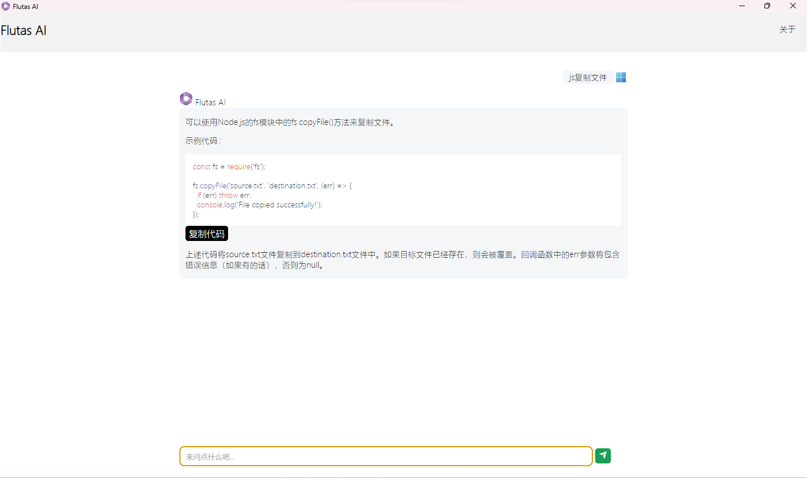
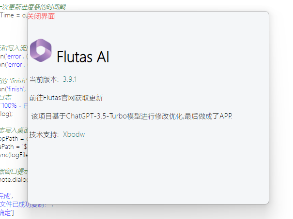

FlutasAI又又又更新了
我们于2023年6月1日14:00分更新了Flutas AI
新版的Flutas AI版本号晋级,为4.0.0
安装包体积约为 83MB,
立即下载 4.0.0 版本(最新)
历史版本
下载安装包后,双击即可进行安装


Version 4.0.0 更新日志
1.使用了低版本的API,目前支持Win7
2.修复导入聊天记录时必须选中两次文件才能导入的情况
3.使用SweetAlert2创建符合审美的漂亮提示框
4.增加实验性功能:自定义APIKey
5.Flutas AI 从 4.0.0 版本开始,每日最多可发送6次ChatGPT信息请求,超过次数的会被警告(Flutas AI资金短缺),注意!如果您是使用自己的API Key,则不会限制请求次数
Version 3.8.1 更新日志
Version 3.9.1 更新日志
1.修复重大问题:不支持Win7,目前已修复待测试,欢迎大家指正改正
2.添加导出与导入聊天记录json文件功能,可以把AI的输出与自己的提问保存并随时加载
3.添加应用检测自动更新功能,可以在面板里检测,应用启动时也会检测
Version 3.8.1 更新日志
Version 3.7.8 更新日志
1.再次更新应用图标,以后不会换了
2.添加代码块复制代码按钮(做了好久终于搞出来了[悲])
3.其他已知Bug修复.
Version 3.7.5 更新日志
1.更新应用图标,更加大气美观
2.修复AI在写代码时Markdown转换为代码块行显示错误问题
3.其他已知Bug修复.
该模型为ChatGPT 3.5-turbo